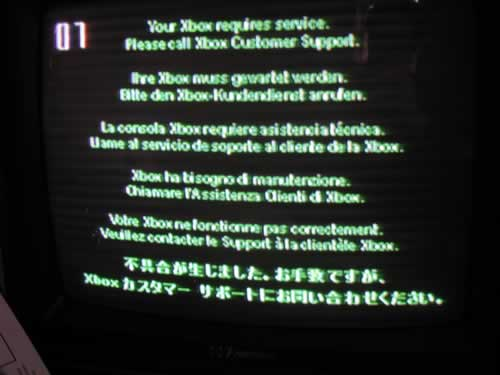

XBOX
"NEEDS SERVICE" ERROR
When you boot your Xbox and you get
a screen like this:

There is something
wrong with your Xbox. Of this happened after you installed your
MOD CHIP, then you were the direcy cause of the faikure. The
numbers below will tell you what's wrong, and list any possible
solutions to correct the error of known.
The error at the TOP LEFT of the screen shows you the number.
0 1 2 3 4 5 6 7 8 9 10 11 12 13 14 15 16 17 18 19 20 21
No number - Unknown - Check the 12pin yellow connector
on DVD drive.
Video chip or I/O Chip bad.
CPU Bad
One or both voltages of the power supply low, or no
output.
Solder splash short on Mainboard.
1 - bootldr -
Unknown exactly,
something to do with checking the motherboard.
2 - bootldr -
Eeprom check
failed - This could be due a bad eeprom flash/corrupted data or the
eeprom chip is damaged.
3 - bootldr - ??/not used
4 -
bootldr - Ram check failed
- Self explanitory.
5 - kernel -
HDD not locked
(retail bioses equire the hd to be locked)
- Booted to hard disk with mod off, and drive is unlocked, lock the
hard disk. Lock the drive if you want to boot to the M$ Dash without
the modchip on.
6 - kernel -
Cannot unlock HDD
- You put a locked hard disk from
another console, and that drive is still locked, the keys do not match.
7 - kernel -
HDD timeout. HDD
was found - Improper jumper setting,
Check power, check ribbon cable and seating, damaged hard disk.
8 - kernel - N
HDD found -
Check ribbon cable, broken/bad drive.
9 - kernel -
HDD parameters
(PIO/DMA/or size {debug}, certain size
HDD minimum is required for debug) -Your Xbox motherboard is having
trouble communicating with the Hard
Drive. Replace
the IDE cable. The hard disk
does not support one or more of these features. Do not use older hard
disks for modding.
10 - kernel -
DVD timeout. The
DVD drive did not respond, though
was recognised - Check for IDE cable and seating. Check jumper setting.
11 - kernel -
No DVD Found -
Drive is no good. During game play,
drive failed to eject the disc after you were using the system -
overheating - drive is failing. If you were inside the box, check
cables and power.
12 - kernel -
DVD parameters
(PIO/DMA) - Modded aftermarket drive does
not comply with settings. Component went bad on OEM drive minboard. Bad
IDE cable.
Fix: In most cases
the DVD drive needed replaced.
13 - kernel -
Dashboard launch
fail (due to missing/bad key, or
anything else that would prevent it from running) and the dashboard
didn't specify why it failed - Something has happened to the software
on your xbox and it can no longer perform properly - try one of four
other Dashboards.
This error has been found to be because
of the incompatibility between the (older) dashboard (4920) that older
some older auto-installers use, and the new dashboard/kernel versions
found in some new xbox's and found in xbox's that have been connected
to xbox live. When you log in to xbox-live, if needed, it
will upgrade your dashboard file(s). This dasboard is
incompatible with the xboxdash.xbe that an old auto installer may
use. Fix:
Find someone who has a WORKING modded box - copy their C_drive
to your PC. Then copy (overwrite all) those files back to YOUR
C_drive, then your alternate dashboard. Fix: You can use the
dashupdate found on most new xbox games! Be sure to 1st unplug
your ethernet cable before you run the DVD.
This
happened with a softmodded XBox, and after you played on-line or
connected to XBL and it "updated" the dash: You will need to
CHIP the XBox to fix it. The update would have patched, altered
or replaced some of the eploited files and corrupted them - or purposly
altered/erasesd files that the softmod needs to run.
Boot MOD ON to EvoX or other Dash that does not require the date and
time to be set.
In your dashboard's INI fole look for something like:
SNTP_Server = 0.0.0.0 and use an IP address.
This is Simple Network Time Protocol.
SNTP IP ADRESSES
US GA ntp.shorty.com (208.21.108.186) Location: CNSG, Atlanta, GA
US NY sundial.columbia.edu (128.59.59.177) Location: Morningside
Campus, Columbia University, New York, NY
14 -
dashboard - Error loading
dashboard (dashboard generic error) -
This error means the boot order was changed or the names of the start
up files were changed - Try a newer MS Dashboard - Copy all original
backup files back to HDD.
15 - - ??/not used
16 -
dashboard - Other files
to do with dashboard / dashboard
settings (specific dashboard error) - Renew the dashboard, the one it
wanted to start up (from a backup?). Xbox was dissconnected from the
power cable for more than five hours, and you booted mod off to non OEM
drive, so it could not run the application to set the time; so, if all
M$Dash files are present, lock the hard disk, boot mod off to set time
and date. If you do not have ALL the M$Dash files (the ones that
pertain to setting the date and time) on your new drive then
you have to put your original drive back in (the one with the M$Dash
still on it), boot mod off and set the date and time; then swap the
drives without physically unplugging the xbox. Unfortunately, if your
NEW drive does not have all the original Xbox's files, this will
happen anytime you leave the Xbox unplugged for more than five
hours. Put all the M$Dash files back on to your Upgraded HDD from
the original one.
17 - - ??/not used
18 - - ??/not used
19 - - ??/not used
20 - kernel -
The dashboard
was attempted to load and failed; It
was a cold boot, and the dashboard didn't specify why it failed, but it
(for some reason) needed to be noted that the dvd passed the
challenge/response authentication - This could be due to missing or
corrupt M$dash related files on the drive.
21 - anywhere
- This error
says that the machine was booted to display
a error, basically someone told the machine to reboot (or launch a xbe)
with this flag, and the error code just means its been rebooted by the
flag - Something has happened to the software on your xbox and it can
no longer perform properly. Try one of four other MS Dashboards.
Problem with the Xbox live components; Remove all the Xbox Live
components. This can happen after a SOFTMOD as well, as
some of the exploits require dashboard Ver: 4920, and if the dash is
not downgraded, you get error 21. Update: You have two locked HDDs in
your Xbox, but the one that was locked FIRST gives you this error when
booting to the M$Dash with the modchip off. Unlock one of the
drives - both drives must have the same Keys to function properly when
locked.